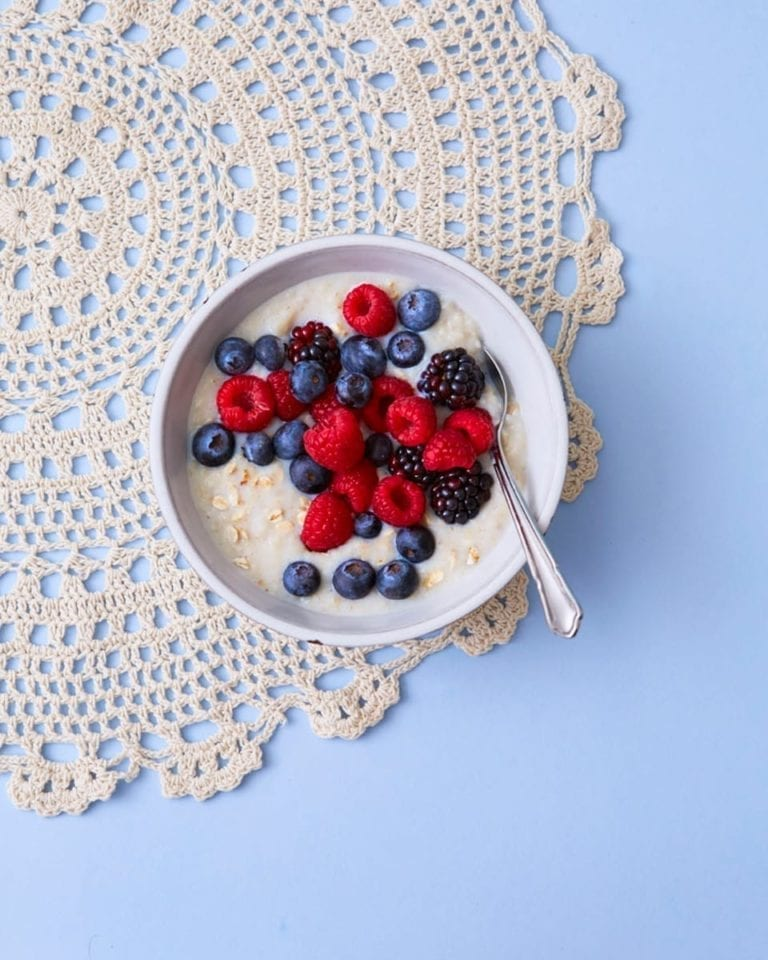

Porridge
Perfect porridge for a healthy way to start the day.
- 40g oats
- 200ml milk or water, or a mixture of the two
- 1 tablespoon of raw honey
- 1 handful of berries(blueberries, blackberries, raspberries)
- cinnamon powder
- Put the oats into a pot and add the milk
- Use medium heat and stir the the content
- After the mass reeaches the desired consistence, put it onto a plate
- Mix the honey under
- Sprinkle the cinnamon over the porridge
- Finally add the berries on top and voilà the enjoy your porridge.